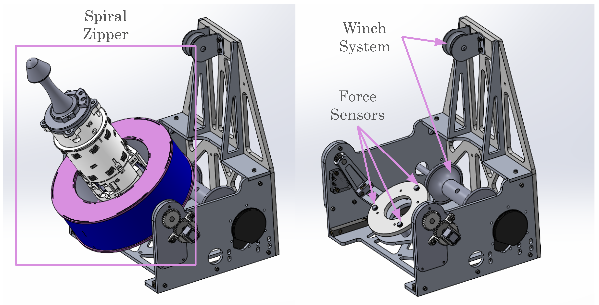
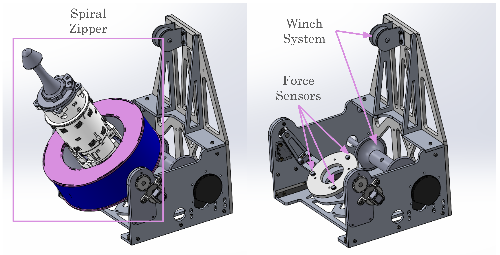

← Back to Projects
NASA LASSIE: Multi-Robot Docking System (TRUSSES)
Jan 2025 - Now· University of Pennsylvania
ROS 2
April Tag
C++
Python
State Estimation
Controls
Raspberry Pi
Extended Kalman Filter
Mechanical Design
Gallery
 


Overview
- Yaw–Pitch Turret & AprilTag Tracking: Developed a two-axis turret for automated visual docking. The system continuously tracked AprilTags to align docking position and orientation within ±1.5° RMS error.
- Rover Mechanical Design & Fabrication: Modeled the 4-wheel rover chassis and docking interface in SolidWorks, fabricated using 3D printing and CNC-machined aluminum parts, achieving a 60 kg load capacity and high structural durability under field conditions.
- Rover Control System: Implemented differential-drive motion control on Raspberry Pi 4 with ROS2, running real-time PID velocity control and motor feedback for smooth docking and cooperative push–pull operations.
- Localization & Sensor Fusion: Integrated GPS and IMU data through an Extended Kalman Filter (EKF) in ROS2, achieving <0.3 m drift over 50 m trajectories for robust outdoor navigation.
Highlights
- Autonomous AprilTag tracking and yaw–pitch turret alignment (±1.5° RMS)
- SolidWorks design, 3D printing, and CNC machining for a 60 kg load chassis
- ROS2-based differential control with PID velocity loop on Raspberry Pi 4
- GPS + IMU fusion via EKF, achieving less than 0.3 m localization drift over 50m navigation